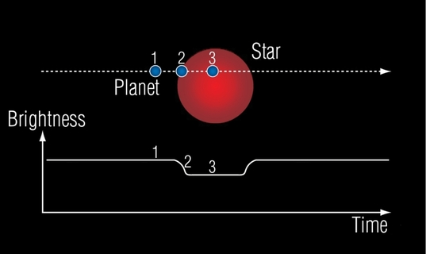
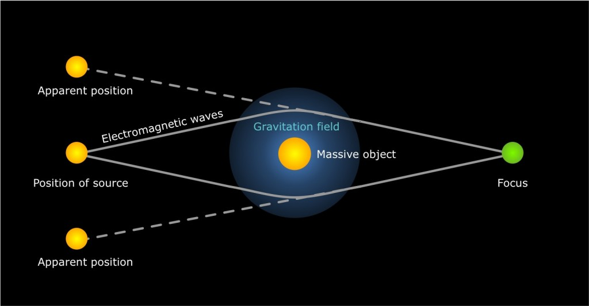

Header tree
Detektion af
-
exoplaneter
-
Detektion af exoplaneter er ikke så ligetil. De er jo ikke stjerner, og derfor lyser de ikke, så vi kan ikke se dem bare ved at pege teleskopet i den rigtige retning. Enkelte exoplaneter er dog blevet observeret ved direkte observation, men det hører til sjældenhederne. Derfor må man ty til andre midler.
-
Den måske mest oplagte måde er at se efter et dyk i lysintensiteten fra en stjerne, når planeten bevæger sig ind foran skiven. Dette kaldes transit-metoden. Det kræver meget præcise målinger at benytte denne metode, for en planet med radius \({1\over 10}\) af stjernens radius forårsager et dyk i lysintensiteten på omtrent \({1\over 10^2}=1\)%. Derudover kan man jo kun detektere planeter, der rent faktisk bevæger sig ind mellem stjernen og Jorden, hvilket langt fra alle gør. Til sidst skal man sikre sig, at det rent faktisk er en planet, der er tale om. Hvis det er en planet, må den forårsage regelmæssige dyk i lysintensiteten, og derfor stiller man krav om tre dyk med ens periode.
-
Radialhastighedsmetoden er den mest succesfulde, når det kommer til at detektere exoplaneter, men den har store problemer alligevel. Da den afhænger af bevægelse mod og fra Jorden, kan den kun detektere planeter, der forårsager lige præcis det. Det vil sige, at hvis kigger vinkelret på planetens plan, har stjernen ingen bevægelse mod eller fra os, og derfor vil lyset ikke være rødforskudt. Vi ender derfor ud med en sinusafhængighed. Hvis vinklen “i” er vores synslinjes vinkel ift. vinkelret på planen, så vil vi observere massen \(M'=sin(i) \cdot M\). Da vi sjældent kender hældningen, kender vi ikke planeternes faktiske masser, og der er derfor risiko for, at nogle af de detekterede planeter kan være stjerner eller bare meget tungere, end vi måler.
En anden ulempe er, at de forudsætninger, der er, for at vi kan detektere en planet på denne måde, passer meget dårligt på jordlignende planeter, og derfor er det sandsynligvis ikke den bedste måde at finde exoplaneter med liv. Til gengæld er den god til at finde såkaldte hot Jupiters.
En tredje måde at detektere exoplaneter er ved gravitational lensing. Det går ud på, at når en stjerne passerer mellem Jorden og en anden stjerne, vil dens tyngdefelt afbøje lyset som en linse, så vi ser en øget luminositet fra stjernen. Hvis den passerende stjerne har en planet, vil denne også afbøje lyset, hvilket vil give en meget markant (men meget kort) stigning i lysintensitet fra den fjerne stjerne, hvilket kan ses som en høj “tak” på en graf. Da det nødvendige alignment aldrig opstår igen, kan man ikke verificere resultatet eller som med transit-metoden holde øje med periodiciteter. Uheldigvis forholder det sig samtidig sådan, at planeter, der let detekteres med gravitational lensing er svære at detektere vha. de andre metoder, da gravitational lensing er bedst til at detektere planeter langt fra deres stjerne.
-

Transit-metoden

Radialhastighedsmetoden

Gravitational lensing